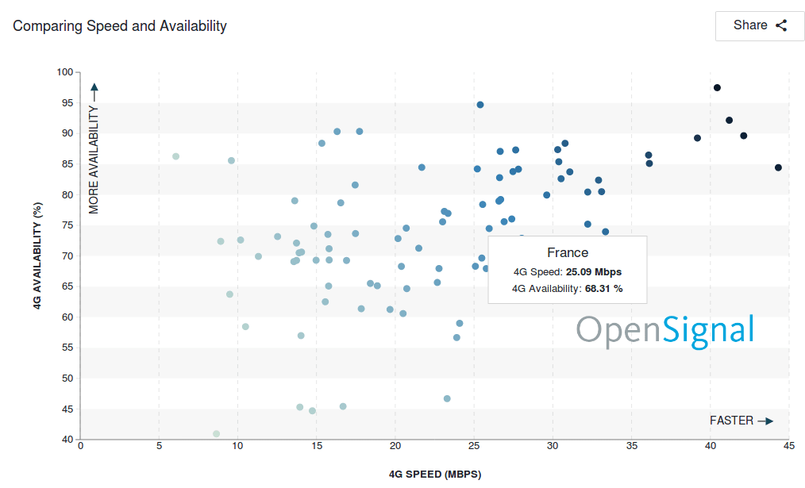
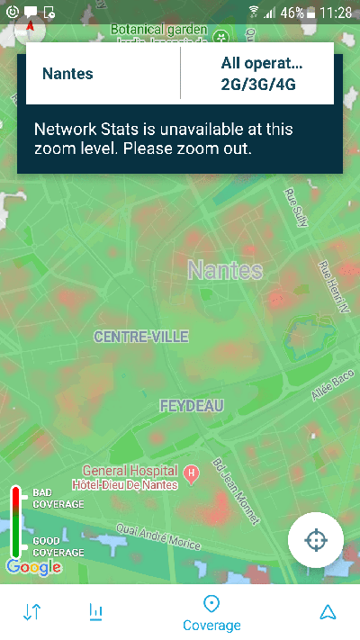

En facilitant l’accès aux solutions numériques, le nombre d’utilisateurs d’applications mobiles va sensiblement augmenter. Mécaniquement le taux d’engagement lié au service offert sera lui aussi en augmentation. Cette métrique est essentielle au succès d’une application. Sans accessibilité, le risque que les utilisateurs n’utilisent pas le service est élevé. Et si le taux d’engagement est faible, les revenus issus de l’application pourraient être lourdement impactés.
Le succès et l’adhésion d’une application sont trop souvent réduits à l’ASO (App Store Optimization ) ou au SEO (Search Engine Optimization). Si l’application est bien classée, alors les utilisateurs seront au rendez-vous. Mais le critère de performance est en réalité que très peu pris en compte par les applications. En effet, on considère que l’ensemble des utilisateurs possède une connexion rapide ainsi qu’un smartphone dernière génération. Mais c’est totalement faux.
Pourquoi avons-nous ce sentiment de vitesse et d’accès par tous ?
Les communications des opérateurs sont nombreuses sur la rapidité et la bonne couverture du réseau. Par exemple, les opérateurs annoncent 98% de couverture de la population pour la 4G. Il s’agit pour eux, d’un argument important de différentiation.

Et les annonces des nouvelles technologies viennent renforcer l’idée que les technologies actuelles sont largement déployées. Les communications sur la 5G rendent en effet la 4G chose acquise. C’est le cas de Xiaomi qui à récemment dévoilé le premier smartphone 5G.

Par ailleurs, le déploiement des technologies actuelles semble n’avoir aucune limite : la 4G est sur la lune
Le sentiment de vitesse de connexion provient aussi du fait que les décideurs et les concepteurs d’application sont dans des zones et dans des conditions de connexion idéales (zone urbaines, locaux avec connexion fibre…). Les outils d’analytics mis en place chez les éditeurs d’applications n’aident pas. En effet, comment savoir qu’un utilisateur existe s’il ne se connecte pas… L’abondance de données rend l’analyse des problèmes de connexion trop difficile à réaliser.
Qu’en est-il réellement du côté des utilisateurs ?
L’ARCEP réalise depuis 2000 un baromètre du numérique qui recense les chiffres du vrai usage du mobile en France. Son édition 2018 présente les constats suivants :
61% des détenteurs de mobile utilisent les réseaux 4G (contre 42% en 2016)
Ce chiffre descends à 51% dans les communes de moins de 2000 habitants.
On observe que nous sommes encore loin de la promesse de couverture à 100%.
Et ce constat est confirmé par OpenSignal qui réalise des mesures réelles via les tests des utilisateurs.

Selon les mesures, la France présente un taux de couverture de 68%. Chiffre intéressant, la vitesse de connexion moyenne à 25 Mbps ne fait pas partie des meilleures. Ceci relève une donnée importante à prendre en compte : la qualité de l’infrastucture (Opérateurs, antennes…). Les pays, les différentes zones même à l’intérieur d’une même ville présente des inégalités en terme de couverture 4G :
Par exemple, voici la carte de couverture réseau du centre-ville de Nantes :

On observe qu’il y a très peu de zones en vert foncé (couleur signifiant une bonne couverture réseau) et beaucoup de zones en rouge (mauvaise couverture).
Au final, la couverture réseau et la vitesse des utilisateurs est très variable. C’est le même constat aussi bien à l’échelle locale qu’au niveau mondial. Globalement, les utilisateurs sont insatisfaits de la connexion 4G.
Le déploiement des technologies s’accélère ainsi tout va rentrer dans l’ordre ?
La croyance en l’évolution des technologies pourrait nous faire croire que cette situation est conjoncturelle et que tout va prochainement rentrer dans l’ordre. C’est le message qui se veut rassurant de la part des opérateurs, pas uniquement en France mais aussi dans des pays qui semble moins avancés en terme de déploiement.

C’est aussi le message des politiques qui annoncent la grande vitesse de connexion accessible à tous. Cependant ce n’est qu’une stratégie et des promesses en l’air. La réalité est beaucoup plus complexe.
D’une part, on le voit même si les nouvelles technologies sont déployées, l’accès pour tous peut prendre plus de temps. Beaucoup d’utilisateurs sont encore en 2G. Et cela pour plusieurs raisons. La couverture à 100% est impossible comme nous l’avons observé mais aussi des zones seront toujours blanches. Les nouveaux bâtiments construits avec plein de métal sont des cages de Faraday qui bloquent les ondes et qui rendent l’accès aux réseaux compliqué. Ce n’est qu’un exemple mais on pourrait citer une multitude de situations similaires.
Et même si l’on obtenait une couverture à 100%, les équipements des utilisateurs devraient suivre la cadence. Il serait nécessaire de s’équiper de smartphones dernières générations. Et ce n’est pas forcément la volonté des utilisateurs de changer aussi souvent. En tout cas, le reconditionnement tends à maintenir des équipements anciennes générations sur le marché. 1 Français sur 3 déclare avoir acheté un téléphone d’occasion. Or peu de chance que ces téléphones intègrent la 5G rapidement.
Les promesses des nouvelles technologies sont aussi bien souvent sur-évaluées. L’arrivée de la 5G est associée à plus de vitesse. Ce n’est cependant pas si simple. La 5G va permettre de nouveaux usages (celui de l’IoT par exemple) et de décongestionner le réseau 4G… Autant dire que si vous comptez atteindre tous les mobinautes, il faut compter sur le fait qu’une grande partie d’entre-eux ne sera pas dans des conditions de connexion idéales.
Quel impact sur le business de votre application ou celui de vos services ?
L’usage du mobile dans différents domaines est devenu très répandu. Par exemple, celui du M-Commerce, selon l’étude ARCEP, 61% des mobinautes effectuent des achats avec leur smartphone. C’est globalement les mêmes statistiques dans les autres pays. En Angleterre, c’est 41%. Le revenu d’une application est généré en fonction du nombre d’utilisateurs. Or si l’utilisateur à une mauvaise expérience ou même qu’il ne peut pas aller au bout de sa volonté d’achat pour cause de mauvaise expérience, les revenus ne seront pas au rendez-vous.
Le manque de performance est un des critères de désengagement des utilisateurs. Comme nous l’avons vu, une grande partie de vos utilisateurs vont se trouver dans des conditions de connexion non-optimales. Dans ce cas, l’application va probablement être moins réactive voir inutilisable dans certains cas. Pour référence, nous avons mesuré avec notre outil GREENSPECTOR des temps de chargement allant jusqu’à 4 minutes pour certaines applications en 2G. Au final, le risque que l’utilisateur désinstalle l’application est élevé. Par ailleurs, le taux de désinstallation à 30 jours est de 28%. Il est encore plus important dans certains pays, comme les pays en voie de développement, pour des raisons d’espace et de lourdeur. Les problèmes de connexion sont dans ce cas très importants pour l’adhésion. Cela rejoint les données observées côté performance web ou 53% des visiteurs abandonnent le site si ce dernier ne se charge pas en moins de 3 secondes (Source : Chrome Dev Summit 2017).
D’autres impacts autres que des impacts économiques ?
Si votre application n’est pas fonctionnelle pour des connexions lentes, certains utilisateurs ne pourront pas utiliser vos services. Vous allez donc exclure involontairement des utilisateurs. Et cette exclusion ne va pas dans le sens du pillier social du développement durable qui, entre autre, demande l’inclusion de toutes les populations.
A ce même titre, si votre application fonctionne mal avec des réseaux moins rapides, elle va consommer d’avantage de batterie. Et là, c’est le pillier environnemental que vous n’allez pas respecter.
Comment agir ?
Il ne faut pas attendre les retours de vos utilisateurs ou ceux de vos outils de monitoring pour agir. Un utilisateur qui ne pourra pas se connecter à votre application ne sera peut-être pas visible ou remonté dans vos données. Il est donc nécessaire d’anticiper et détecter les potentiels problèmes de performance.
1) Lors de la conception et de l’expression du besoin, demandez et spécifiez le fait que votre solution soit utilisable est visible dans des conditions de connexion limitées. Cela peut simplement se résumer à « mon application, ou telle fonction, peut se charger en moins de 3s sur une connexion 2G »
2) Il est nécessaire de tester votre solution dans des connexions limitées (2G, 3G…) soit de façon automatique soit de façon manuelle.
3) Vous pouvez surveiller les performances des utilisateurs via les outils de monitoring. Attention cependant car il est grandement possible que de nombreux utilisateurs ne soient pas du tout visibles depuis ces outils.
Les solutions 1 et 2 sont les solutions que nous préconisons et que nous utilisons chez GREENSPECTOR. La solution 3 est possible avec GREENSPECTOR en mesurant la solution immédiatement après la mise en production.